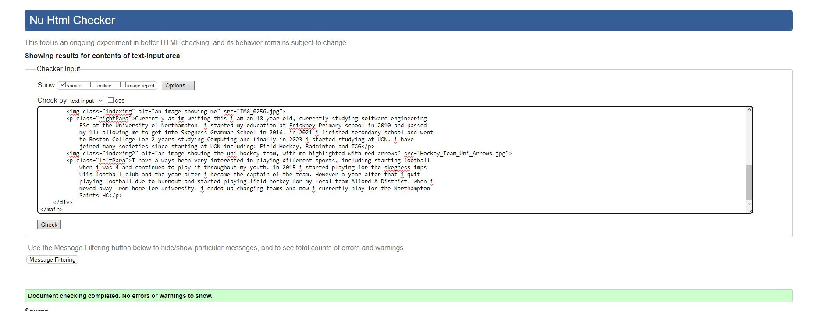
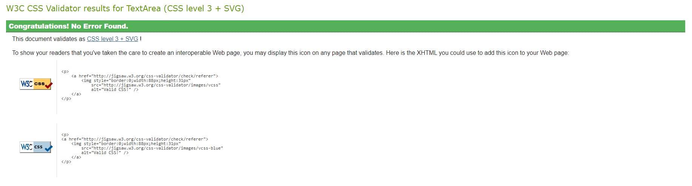
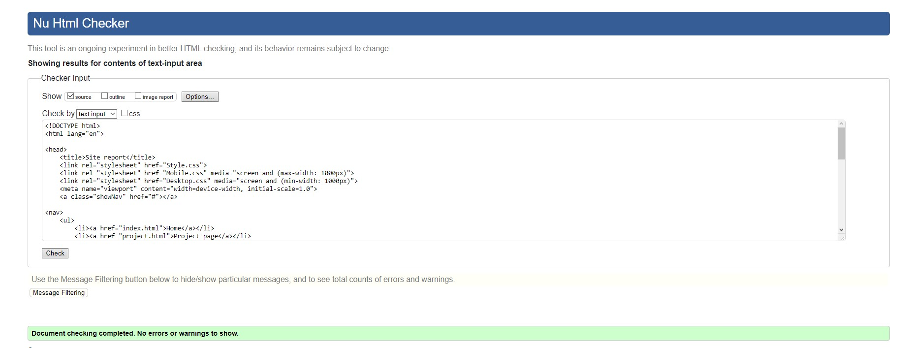
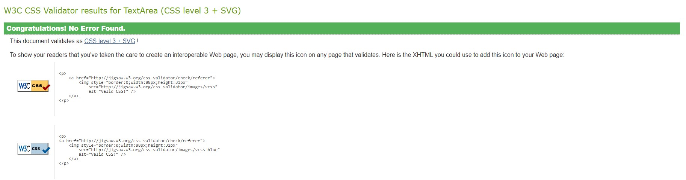
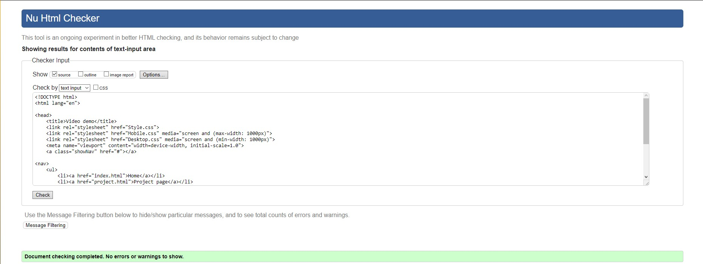

Oliver Cocks' Site Report
While learning Web development this semester there were many things that i found easy and many
things i found hard, for instance most of the web pages
were very easy to make as they were just text and images where as others with more difficult UIs were obviously
much more difficult. since i had already done website development in college, it was more just a case of trying
to remember some of the stuff i did there, but also trying to remember some things as my memory is not the best
i often had to go back to my notes and see what was written to correctly determine what i am to do. another
thing i struggled with was the mobile version, as i did not know how to make a mobile nav bar dissapear and
re-appear using the #clicked tag.
My experience in the module upto assigmnent one has been great! It is my favourite lecture to attend so far
out of my 3 modules this semester, the lecturer, Chris, makes everything so easy to understand as well as his
charisma makes the lesson exciting even if most students arent the most awake which i really admire. although i
have had to miss about an hour of a few lessons for some extra curricular activities i really do believe that it
is a great module with a great lecturer to fit.
Most of the work i did on my portfolio was within the final 2 weeks of the assignment being due, mainly the
final touches like the form, the site report and mobile version too, although i was adding the occasional bits
in every so often in lecture or if i wanted to spend some time on it. The UI for the website is very simple
which is wht i was aiming for as sometimes if a website is too complicated then it becomes a pain to navigate!
so i went with a very simple nav bar, text boxes and images to fit the aestethic i was aiming for.
the design of my website is very much my own design decision, i did use a website by the name of "coloors"
to help decide what colors to have on my website as i started out with a grey and orange design which just didnt
look very professional. for the font i decided to go for some fonts that were slightly different but not too
different to where they looked out of place near each other, this creates a nice blend that gives the website
some more pazazz and overall more professional as well.







